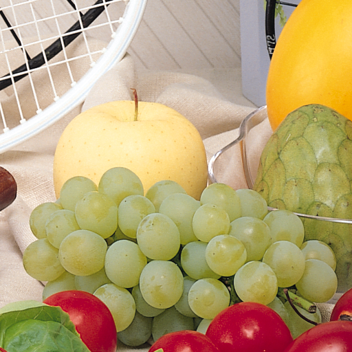

https://python-pillow.org/
https://pillow.readthedocs.io/en/latest/
Warning. Pillow and PIL cannot co-exist in the same environment. Before installing Pillow, please uninstall PIL.
PIP (in a virtual environment) python3 -m pip install Pillow APT (for the entire computer) Debian packages (Pillow fork): python-pil, python-pil.imagetk, python3-pil, python3-pil.imagetk
PIL is the Python Imaging Library by Fredrik Lundh and Contributors. Pillow is the friendly PIL fork by Alex Clark and Contributors.
PIL adds image processing capabilities to your Python interpreter. The core image library is designed for fast access to data stored in a few basic pixel formats. It should provide a solid foundation for a general image processing tool.
Why a fork? PIL is not setuptools compatible. Also, PIL’s current release schedule is too infrequent to accommodate the large number and frequency of issues reported.
import PIL print(PIL.__version__) # 5.4.1 in Debian 10
https://pillow.readthedocs.io/en/latest/handbook/concepts.html
https://en.wikipedia.org/wiki/Raster_graphics
https://en.wikipedia.org/wiki/Vector_graphics
PIL handles 'raster images' (rectangles of pixel data). The opposite to 'raster graphics' is 'vector graphics'.
BANDS An image can consist of one or more bands of data. A PNG image might have ‘R’, ‘G’, ‘B’, and ‘A’ bands for the red, green, blue, and alpha transparency values. Many operations act on each band separately. It is often useful to think of each pixel as having one value per band. image.getbands() # the number and names of bands in an image (tuple)
MODES The 'mode' of an image is a string which defines the type and depth of a pixel in the image. Selected standard modes: 1 (1-bit pixels, black and white, stored with one pixel per byte) # a range of 0-1 L (8-bit pixels, black and white) # a range of 0-255 P (8-bit pixels, mapped to any other mode using a color palette) RGB (3x8-bit pixels, true color) RGBA (4x8-bit pixels, true color with transparency mask) CMYK (4x8-bit pixels, color separation) image.mode # the image mode
SIZE image.size # the image size in pixels, 2-tuple, (width, height)
COORDINATE SYSTEM PIL uses a Cartesian pixel coordinate system, with (0,0) in the upper left corner. Coordinates are usually passed to the library as 2-tuples (x, y). Rectangles are represented as 4-tuples (upper left, lower right).
PALETTE The palette mode (P) uses a color palette to define the actual color for each pixel.
INFO You can attach auxiliary information to an image using the 'info' attribute. This is a dictionary object. image.info # get the info attribute
FILTERS For geometry operations that may map multiple input pixels to a single output pixel, PIL provides different resampling filters (NEAREST, BOX, BILINEAR, HAMMING, BICUBIC, LANCZOS).
https://pillow.readthedocs.io/en/latest/handbook/image-file-formats.html
The open() function identifies files from their contents, not their names, but the save() method looks at the name to determine which format to use, unless the format is given explicitly.
The 'format' attribute identifies the source of an image. If the image was not read from a file, it is set to 'None'.
from PIL import Image
image1 = Image.open('fruits.png')
image1.mode # 'RGB'
image1.size # (512, 512) = (width, height)
image1.width # 512
image1.height # 512
image1.format # 'PNG', the image is from the PNG file
image1.info # {'dpi': (72, 72)}
image1.show()

image2 = Image.open('boy.bmp')
image2.mode # 'P'
image2.size # (768, 512)
image2.width # 768
image2.height # 512
image2.format # 'BMP', the image is from the BMP file
image2.info # {'dpi': (0, 0), 'compression': 0}
image2.show()